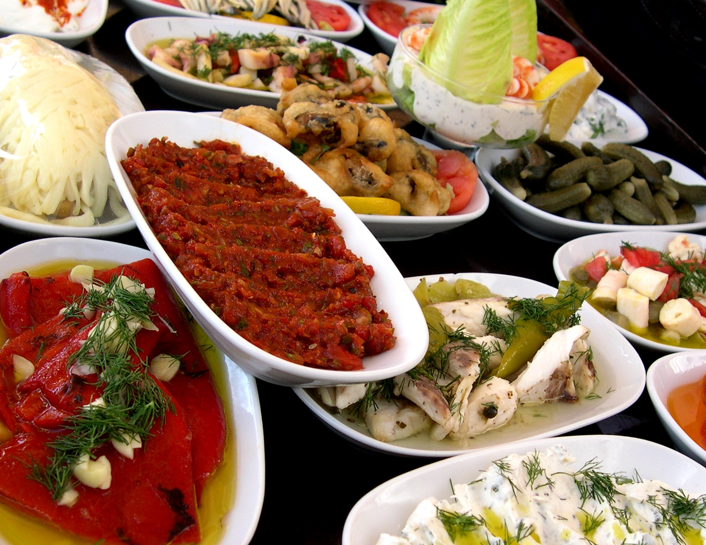

Menu
Appetizers
-
Hummus and veggies
A classic and healthy option that includes a blend of chickpeas, tahini, lemon juice, and garlic served with fresh vegetables such as carrots, cucumbers, and bell peppers.
$8
-
Caprese skewers
A simple appetizer that features fresh mozzarella, cherry tomatoes, and basil leaves skewered together and drizzled with a balsamic glaze.
$10
-
Edamame
A protein-rich option that involves steamed or boiled young soybeans served with a sprinkle of sea salt.
$5
-
Grilled shrimp with mango salsa
A flavorful appetizer that combines grilled shrimp with a fresh and tangy salsa made from mango, lime juice, and cilantro.
$12
-
Bruschetta
A classic Italian appetizer made with toasted bread, garlic, and fresh tomatoes, topped with basil leaves and a drizzle of olive oil.
$8
-
Baked sweet potato fries
A healthier alternative to regular fries, made by slicing sweet potatoes into thin pieces, baking them in the oven with a little oil, and seasoning them with salt and pepper.
$6
Entrees

-
Grilled salmon with avocado salsa
A delicious and healthy main dish that features grilled salmon fillets topped with a fresh and creamy avocado salsa made from avocado, red onion, lime juice, and cilantro.
$18
-
Quinoa-stuffed bell peppers
A vegetarian main dish that involves roasted bell peppers stuffed with a mix of quinoa, black beans, corn, tomatoes, and spices, topped with melted cheese.
$14
-
Baked chicken with sweet potato and broccoli
A nutritious and filling main dish that combines baked chicken breasts with roasted sweet potato and broccoli, seasoned with garlic and herbs.
$16
-
Turkey meatballs with zucchini noodles
A low-carb and protein-rich main dish that features turkey meatballs served with zucchini noodles (zoodles) and a flavorful tomato sauce.
$15
-
Grilled tofu with mixed vegetables
A vegan main dish that involves marinated and grilled tofu served with a mix of sautéed vegetables such as bell peppers, mushrooms, and onions.
$12
-
Shrimp and quinoa bowl
A healthy and balanced main dish that includes sautéed shrimp, quinoa, avocado, cherry tomatoes, and cucumber, served with a zesty citrus dressing.
$17
Dessert

-
Chia seed pudding
A creamy and nutritious dessert made with chia seeds, almond milk, vanilla extract, and sweetened with honey or maple syrup.
$6
-
Fruit salad with honey lime dressing
A refreshing and colorful dessert that combines a variety of fresh fruits such as berries, melon, and pineapple, tossed with a sweet and tangy honey lime dressing.
$8
-
Baked apples with cinnamon and walnuts
A warm and cozy dessert that involves baked apples stuffed with a mix of chopped walnuts, cinnamon, and a touch of honey or maple syrup.
$7
-
Dark chocolate avocado mousse
A decadent and healthy dessert made with ripe avocados, cocoa powder, maple syrup, and melted dark chocolate.
$9
-
Berry yogurt parfait
A simple and tasty dessert that layers Greek yogurt with fresh berries, granola, and a drizzle of honey or maple syrup.
$6
-
Banana oat cookies
A delicious and healthy alternative to regular cookies that uses ripe bananas, oats, cinnamon, and a touch of honey or maple syrup as a sweetener.
$5
Drinks

-
Green smoothie
A nutrient-packed drink that combines leafy greens, such as spinach or kale, with fruit, such as bananas or apples, and liquid, such as almond milk or coconut water.
$7
-
Turmeric latte
A warm and comforting drink that is made with turmeric, ginger, cinnamon, black pepper, and a non-dairy milk, such as almond or coconut milk.
$6
-
Hibiscus iced tea
A refreshing and tart drink made by steeping dried hibiscus flowers in hot water and adding a touch of sweetener, such as honey or agave nectar.
$4
-
Watermelon agua fresca
A light and fruity drink made by blending fresh watermelon with water, lime juice, and a touch of sweetener, such as agave nectar or honey.
$5
-
Coconut matcha latte
A creamy and flavorful drink made with matcha green tea powder, coconut milk, and a touch of honey or agave nectar.
$8
-
Berry smoothie bowl
A thick and satisfying drink served in a bowl and made with frozen mixed berries, banana, Greek yogurt, and a touch of honey or maple syrup.
$9